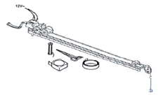

| Objetivo: |
Estudiar la transformación de energía potencial en energía cinética. Realizar el balance en un experimento de la conservación de la energía según su ecuación general.
|
| Material |
|
|
| Introducción: |
| La energía potencial es la capacidad que tienen los cuerpos para realizar un trabajo, dependiendo de la configuración que tengan
en un sistema de cuerpos que ejercen fuerzas entre sí. Puede pensarse como la energía almacenada en un sistema, o como una
medida del trabajo que un sistema puede entregar. Más rigurosamente, la energía potencial es una magnitud escalar asociado a un
campo de fuerzas (o como en elasticidad un campo tensorial). Cuando la energía potencial está asociada a un campo
de fuerzas, la diferencia entre los valores del campo en dos puntos A y B es igual al trabajo realizado por la fuerza para cualquier
recorrido entre B y A.
La energía cinética es la energía que posee un cuerpo de masa m por encontrarse en movimiento. Es un error común creer que por "movimiento" se habla de movimiento lineal v. Existe también el movimiento angular ω, y no puede ser ignorado. Desde un punto de vista formal, la energía cinética es el trabajo necesario para acelerar una partícula desde una velocidad (angular y lineal) nula hasta una velocidad (angular y lineal) dada. Las unidades del SI para la energía son julios o joules. |
| Desarrollo Experimental: |
|
Preparación: Montaje de acuerdo a la Figura 1.
Experimento:
|
| Resultados y Conclusiones: |
| Determinamos la velocidad final del vagón a partir de las marcas de las décimas de segundo: Δs= _____cm.= _____m v = Δs/Δt = (_____m/O, 1) m/s = _____m/s Velocidad final v del vagón:_____ m/s Este resultado lo comparamos con la velocidad final calculada a partir del teorema de la energía: Energía cinética = energía potencial M*v2/ 2 = 2*m*g*h v =√ 2 m*g*h/m m = 0,02 kg M = 0,22 kg h = 0,4 m Para la demostración de la ley de la conservación de la energía mecánica determine la energía potencial y cinética en los siguientes momentos: Cuando el carro se encuentra en reposo a la máxima altura y un momento antes del choque contra el jinete (No olvide unificar unidades). Con los datos obtenidos sustituya en la siguiente ecuación. Ec= Ep, Ec-Ep= 0 (Conservación de la energía mecánica). El valor obtenido de esta ecuación debe ser cero en condiciones ideales o lo más cercano. Pudieran obtenerse en valores positivos resultado satisfactorio, físicos no controlados (fricción, temperatura, velocidad del aire). Conclusión: En la transformación de energía potencial en energía cinética, la velocidad final depende de la altura, de la masa a acelerar y de la masa acelerante. |
| Figura 1: Montaje |
|  |